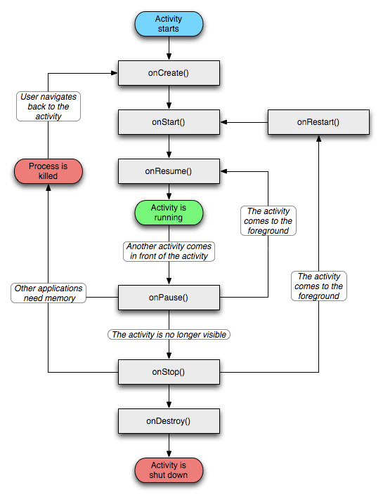

Activity

- create :创建UI
- resume ：初始化Pause中释放的资源
- pause ： 释放资源，比如camera，sensor，receivers
Activity任务栈
可以通过AndroidMainfest文件alunchMode来设置也可以通过Intent的flag来设置
- standard： 启动的Activity都在一个任务栈中，先进先出，创建就放入任务栈
- singleTop : 启动的Activity都在一个任务栈中，判断启动的Activity是不是在最上面，如果在栈顶，就不创建，不在栈顶就创建
- singleTask：和singleTop类似，检查整个Activity栈是否存在需要启动的Activity，如果存在，就把他上面的全部销毁，不存在就创建。如果在其他程序中通过SingleTask启动这个Activity，就会创建一个新的任务栈，不是放在启动的任务栈，如果这个Activity已经在任务栈中存在，就不会创建任务栈，而是把它放到前台，放到栈顶
- singleInstance：和浏览器工作的内容有点相似，如果多个程序启动，如果当前没有在浏览器中打开，就会打开浏览器，否则就会在当前打开的浏览器中访问，并且这个会在singleInstance的Activity会出现在一个新的任务栈中，这个任务栈只存在一个Activity
Intent FLAG 启动模式
- onInterceptTouchEvent.FLAG_ACTIVITY_NEW_TSK ：这个启动的会放在一个新的task中
- onInterceptTouchEvent.FLAG_ACTIVITY_SINGLE_TOP ：singleTop
- onInterceptTouchEvent.SINGLE_ACTIVITY_CLERA_TOP ：singleTask
- onInterceptTouchEvent.FLAG_ACTIVITY_NO_HISTORY :A启动B ，B用这个模式启动C 那么任务栈中就会剩下 AC B会关闭
清空任务栈
- clearTaskOnLaunch 启动的时候回将他上方所有的Activity清楚
- finishOnTaskLaunch：离开这个activity任务栈的时候吧自己关闭
- alwaysRetainTaskState： 这个任务栈不接受任何清理命令，一直存在